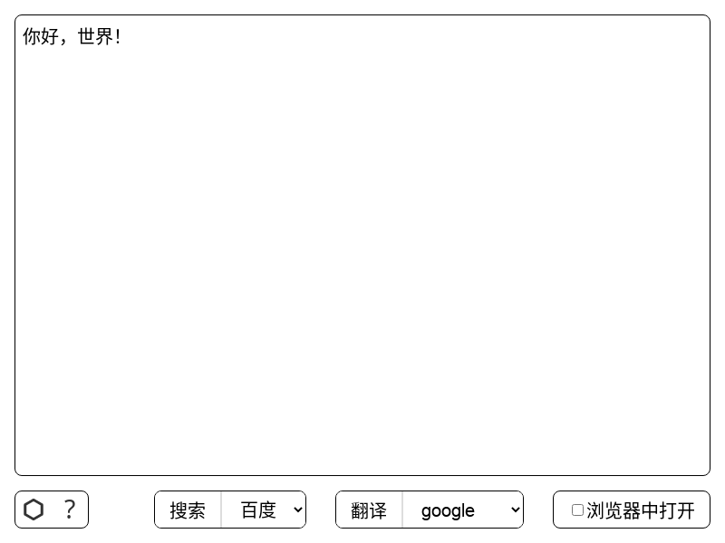
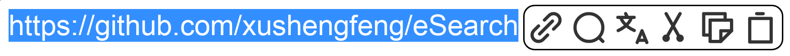
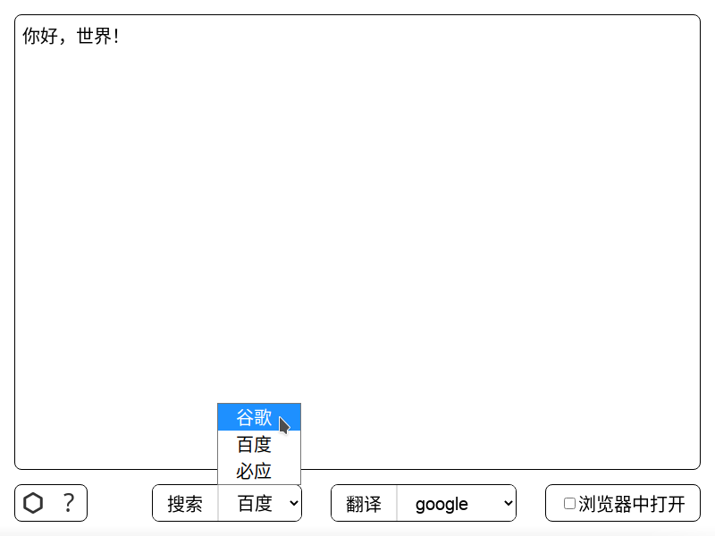

开始
运行eSearch
按下Ctrl+Shift+Z即可进行截图
当然也可以右键点击托盘处的图标，点击“截图搜索”进行截图
此时默认框选全屏
按下鼠标并拖动，画出框即可框选你想要的区域
鼠标旁边有一个“工具栏”，你可以点击按钮进行
文字识别、 扫描二维码、 图像编辑、 固定（ding）在屏幕上、
复制图片到剪贴板和
保存
固定（ding）在屏幕上、
复制图片到剪贴板和
保存
如果你不想截图，可以取消
主窗口
当你按下 文字识别或 扫描二维码后，若识别成功，eSearch将弹出主窗口
按下“搜索”或“翻译”进行对应的操作
如果不想“搜索”或“翻译”全文，可以用鼠标选区部分文字，这样可以“搜索”或“翻译”部分文字
选中时，文字旁边弹出一个编辑栏
你可以进行 打开链接、 搜索、 翻译等操作
“搜索”或“翻译”的引擎是可以更改甚至在设置中自定义
